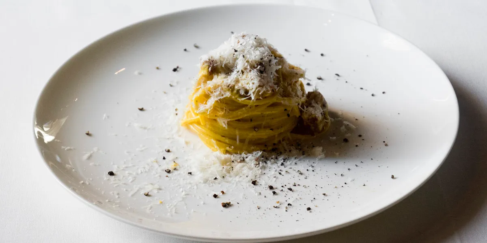

The World's Best Carbonara

Description
This is the original carbonara recipe from the business card of "Luciano
- Cucina Italiana" in Rome. Arguably, the world's best
pasta carbonara.
Ingredients
- 280g spaghetti
- 4 egg yolks
- 200g guanciale in 1,5cm cubes
- 30g grana padano, grated
- 20g pecorino romano, grated
- 2g black pepper, ground
Steps
- Cook the pasta in boiling water as mentioned on the package.
-
Fry the guanciale cubes in order to make them crispy outside and soft
inside.
-
Whisk in a bowl the egg yolks, the grana padano, the pecorino and the
melted fat obtained from frying guanciale.
- Let this mixture rest.
-
Once the pasta is cooked, stir the mixture, ground pepper, and the
little cubes of guanciale in a bowl, add a little pasta water, and mix
to get it creamy.
-
Plate the pasta and add ground pecorino cheese, and freshly ground
pepper on top.
- Serve at the right temperature. Not too hot, not too cold, tepid.
Notes
-
PASTA: 70g of pasta per person seems like a good amount since the dish
is very rich. Spaghettoni, thick spaghetti, are preferred to spaghetti.
They take longer to cook. It gives you more time to cook the sauce
PLUS they are harder to overcook. Worst you could do is capellini or
vermicelli - they would mush and soak up too much sauce. The pasta pot
should be more wide than tall, especially for cooking spaghetti/oni.
Underseason the water (a pinch is plenty). Water level should be 1/2
inch (1cm) over pasta. Stirring is mandatory. Undercook the pasta by
2-3 minutes, this will compensate for the amount of time they spend in
the bain-marie afterwards.
-
MEAT: Luciano cuts guanciale in cubes, not sticks. The card says
1cm cubes, but it's more than that. At least 1/2 inch (1,5cm), if not
2cm, as they shrink a bit during frying. If you've ever cooked steak
before, you know that obtaining a perfect medium rare center is easier
with a thicker piece. Overcook = dry. Cooked right = juicy. Don't go
high heat. Pork fat has a low smoking point. Also, if the chunks were
too big, they would burn outside and stay raw inside. Go medium high
heat to sear first, and then low. Once they are crispy on the outside,
get them off the heat. Room temperature is fine. Keep all that melted
guanciale fat, we're gonna need HALF OF IT, not all of it, for the
sauce later on.
-
EGGS: Use only egg yolks (1 per person) if you want a richer, yellower
color. Or use whole eggs if you want it a little more traditional.
-
BAIN MARIE / DOUBLE BOILER METHOD: Ingredients mix better if they are
warm, and using a double boiler, instead of just a frying pan, means
it will be more gentle. We'll have more control, and we'll be able to
stay below 65°C where eggs start cooking and the cheese starts
creating lumps. Use a large heatproof bowl over simmering water. The
bottom of the bowl can't touch water. Whisk hard to mimic the SABAYON
technique. SABAYON is a foamy, custardy dessert where eggs are
whisked over a bain-marie. This dish really is all about the
light/foamy/airy texture. Air bubbles enhance sensory properties.
As you whisk, drizzle pork fat in there. This is the same process as
for HOLLANDAISE SAUCE. By gradually incorporating fat, you create a
foamy emulsion. Hollandaise uses clarified butter but here it's pork
fat.
Source
Back